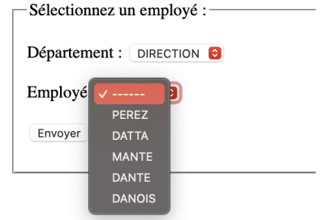

Introduction à JavaScript :
JavaScript est un langage de scripts essentiellement utilisé pour enrichir les pages HTML de code exécutable par le navigateur. Attention ! Il n' a guère qu'une partie de son nom en commun avec le langage Java ! L'utilisation de JavaScript s'étend de plus en olus vers de nouvelles cibles comme la programmation sur le serveur. Nous ne prendrons en compte ici que son utilisation pour les navigateurs.
Ce langage permet d'apporter du dynamisme au niveau des pagesWeb. Nous percevons immédiatement une contradiction entre le fait qu'un navigateur doive essentiemment se contenter de réaliser l'affichage de pages et celui de lui faire exécuter du code. On veillera donc à limiter au maximum l'utilisation de code JavaScript pour :
- éviter d'alourdir les documents HTML
- faciliter leur maintenance
- ne pas surcharger de traitements les postes de travail
Veillons aussi à produire des pages qui pourront être exploitées sur un maximum de types de navigateurs en n'oubliant pas que cerains d'entre eux n'intègrent pas JavaScript (exemple : certains browsers de smartphones) et que certains utilisateurs inhibent JavaScript.
JavaScript est le premier outil nous permettant de faire évoluer un navigateur de la notion de "client léger" à celle de "client riche".
De manière générale, JavaScript est utilise pour :
- Permettre de réaliser des validations de données saisies dans des formulaires.
- Pour gérer les cookies.
- Pour éviter d'augmenter inutilement le nombre de requêtes soumises au serveur Web.
- Il est peut aussi permettre d'enrichir la présentation de la page (menus dynamiques par exemple).
Il peut aussi être utilisé pour faire clignoter une guirlande, faire traverser l'écran par un canard ou demander à un poisson de suivre votre souris (comme quoi il faut savoir ne pas abuser des bonnes choses, ...).
Intégration au HTML :
Un script Javascript sera fourni dans la balise script avec l'attribut type de valeur text/javascript. Il existe également une version plus complexe tenant compte des vieux navigateurs qui ne gèrent pas le JavaScript. En HTML5, on déconseille de spécifier explicitement le type s'il s'agit de text/javascript : https://developer.mozilla.org/en-US/docs/Web/HTML/Element/script.
Soit direment dans le code HTML :
<script type="text/javascript">
// code du script...
</script>Soit par référence à un fichier externe :
<script type="text/javascript" src="scriptname.js"></script>
On préfèrera cette deuxième option par souci de lisibilité du code.
Déclenchement du code :
Une balise <script type="text/javascript"> peut apparaîtra soit dans le head de la page, soit dans le body. Le chargement du fichier de script JavaScript interrompt celui du fichier HTML. Tous les scripts invoqués dans le fichier JavaScript sont immédiatement exécutés lors du chargement dudit fichier.
Quelques éléments de syntaxe de JavaScript
-
Une instruction JS ("statement") se compose de :
- Expressions
- Valeurs
- Opérateurs (+, -, ...)
- Mots clés (for, break, ...)
- Commentaires
- Les instructions sont délimitées par le point-virgule mais celui-ci n'est obligatoire que si l'on désire reprendre plusieurs instructions sur la même ligne.
- Les commentaires sont repris, sur une ligne derrière les caractères //.
- Les noms de variables sont sensibles à la casse. Il est possible également d'utiliser directement une variable sans utiliser let (portée associée à un bloc), var (portée globale) ou const (portée associée à un bloc et immuable (la valeur ne peut pas être changée) !
- Les instructions de contrôle de séquence (if, while, ...) sont sensiblement les mêmes qu'en Java.
Dans le cadre de ce cours, nous nous obligerons à respecter la convention suivante :
- Toutes les variables seront déclarées !
- Les variables seront déclarées avec let ou const !
- Aucune variable sans déclaration !
- Aucune variable déclarée avec var !
Un exemple simple :
Plaçons ceci dans le body d'un de nos précédents documents HTML :
<script type="text/javascript">
document.write("Added by JavaScript code : ");
document.write("He2b-Esi <3");
</script>Nous pouvons aussi sauvegarder ce script à part dans un fichier Myscript.js, dont la référence relative au document HTML ou sa référence absolue sera fournie dans l'attribut source de l'élément script. Si le fichier se trouve dans le même répertoire que le document HTML, nous pourrons le référencer comme suit :
<script type="text/javascript" src="MyScript.js"></script>
Quelques utilisations classiques :
Validation de formulaire :
Un cas classique est celui de la validation d'un champ de saisie devant être numérique. Nous allons réaliser la validation lors de la perte du focus par le contrôle (voir http://www.w3schools.com/tags/ref_eventattributes.asp pour une liste des événements gérés).
<!DOCTYPE html>
<html lang="fr">
<head>
<meta charset="UTF-8">
<title>Validation de formulaire</title>
<script type="text/javascript">
function validateNumeric(champ) {
if (isFinite(champ.value)) {
return true;
} else {
alert("Vous ne pouvez entrer que des nombres !");
return false;
}
}
</script>
</head>
<body>
<h1>Validation externe</h1>
<form name="InfoPersonnelle">
Âge : <input type="text" name="saisie" onblur="validateNumeric">
</form>
</body>
</html>Remarques :
- D'autres événements peuvent vous intéresser onclick, onkeypress, onload, ... En voici la liste complète : http://www.w3schools.com/jsref/dom_obj_event.asp.
- Par convention, si la méthode associée à l'événement renvoie false (comme dans l'exemple ci-dessusà, cela signifie que l'événement n'a pas eu lieu : la page ne sera pas soumise, le caractère pas rentré, ...
- Si nous désirons réakuser une validation lors de l'envoi du formulaire nous serons obliger d'écrire un script spécifique au formulaire.
- Nous verrons par la suite que nous veillerons à éviter l'utilisation des fonctions alert(), confirm(), prompt(), ... qui ont tendance à alourdir l'interface.
Gestion des cookies :
Un Cookie est un petit fichier texte, chiffré ou non, que des sites visités peuvent stocker sur votre machine pour être récupérés d'une visite à l'autre (pour vous faciliter la navigation, pour vous tracer, ...). Seul le site ayant stocké le cookie y a accès.
Un cookie est une paire nom=valeur associé à un serveur et stockée sur le poste client. Lorsque le navigateur envoie une requête à un serveur, il lui envoie également tous les cookies associés.
Un cookie possède aussi une date d'expiration. JavaScript permet, via la propriété cookie du document, de lire et de créer des cookies. La version simplifiée qu'on présente ici peut être prise en défaut dans certains cas particuliers.
function setCookie(nom, valeur) {
document.cookie = nom + "=" + encodeURI(valeur);
}
function getCookie(nom) {
// Tous les cookies sont reçus dans une seule chaîne,
// séparés par des point-virgules, qu'il faut découper.
start = document.cookie.indexOf(nom + "=");
if (start != -1) {
start = start + nom.length + 1;
end = document.cookie.indexOf(";", start);
if (end == -1) {
end = document.cookie.length;
}
return unescape(document.cookie.substring(start, end));
} else {
return "";
}
}DOM (Document Object Model) :
Le Document Object Model va nous permettre de manipuler (consulter/modifier) notre page web via le code JavaScript. On va pouvoir, par exemple, ajouter un message d'erreur à côté d'un champ erroné. C'est également un élément essentiel d'Ajax que nous verrons ultérieurement.
Le DOM (Document Object Model), ou modèle objet de document, est une API pour les documents HTML et XML. Le DOM fournitune représentation structurelle du document, permettant de modifier son contenu et sa présentation visuelle. Fondamentalement, il relie les pages Web aux scripts et langages de programmation.
Concrètement, cela signifie qu'au niveau de JavaScript on dispose d'une représentation du document HTML sous forme d'un "arbre", chaque "noeud" correspond à une balise du document. Cet arbre peut être parcouru mais surtout modifié. Les possibilités sont énormes mais nous l'utiliserons essentiellement :
- Pour faire apparaître des messages d'information ou d'erreurs aux endroits appropriés de la page.
- Avec la technologie AJAX dont il est une des composantes essentielles.
Quelques éléments de syntaxe
Nous ne présentant que la toute petite partie qui sert à notre propos. Nous en dirons un peu plus lorsque nous introduirons les technologies XSL et, comme d'habitude, vous trouverez plus d'informations sur le site de la W3 Schools (http://www.w3schools.com/jsref/dom_obj_document.asp).
- Il existe un certain nombre d'objets prédéfinis. Vous apprendrez à l'usage les méthodes et attributs offerts : document (la racine de l'arbre), window (la fenêtre), ...
-
On peut accéder à un ou des noeuds de l'arbre :
- getElementById("id") ; le noeud correspondant à cet identifiant unique.
- getElementsByTagName("tag") : un tableau de noeuds porteurs de ce tag.
- querySelector(selecteur CSS) : le premier élément dans la descendance de l'élément appelant la méthode querySelector compatible avec le sélecteur CSS en argument.
-
On peut interroger un noeud via des attributs :
- L'attribut innerHTML correspond au code HTML inclus dans un noeud.
- L'attribut style donne le style associé à un noeud.
- L'attribut attributes donne les attributs associés à un noeud.
- Il y a aussi : nodeType, nodeName, nodeValue, ...
- On peut, à partir d'un noeud, se promener dans l'arbre : parentNode, childNodes, firstChild, lastChild, nextSibling, previousSibling.
- On peut aussi modifier l'arbre : createElement, createTextNode, appendChild, insertBefore, replaceChild, cloneNode, removeChild.
Exemple récapitulatif :
Si le document contient <span id="titre"></span>, alors le bout de code suivant permet d'insérer un titre :
document.getElementById("titre").innerHTML = "Compléments Applications";
Le code suivant affiche un message avec le nombre de paragraphes (à lancer via l'événement onload de la balise <body> par exemple).
function countParagraphs {
var myParagraphs = document.getElementsByTagName("p");
alert(myParagraphs.length);
}Découplage HTML / JavaScript :
Tout comme il est de bonne pratique de découpler le contenu HTML de la mise en forme CSS, en liant le(s) fichier(s) CSS à l'aide de la balise <link>, il est conseillé de séparer HTML et JavaScript à l'aide de l'attribut src de la balise <script>.
Par ailleurs, il est également conseillé de découpler fortement les éléments HTML du JavaScript en associant les gestionnaires d'événements dynamiques en JavaScript plutôt que statiquement dans le document HTML.
Dans la suite, voyons en détails comment associer une fonction de validation à un champ d'un formulaire, comme cela a été déjà rapidemment montré ci-dessus.
JavaScript interne :
Reprenons le document HTML avec un script interne :
<!DOCTYPE html>
<html lang="fr">
<head>
<meta charset="UTF-8">
<title>Validation de formulaire</title>
<script type="text/javascript">
function validateNumeric(champ) {
if (isFinite(champ.value)) {
return true;
} else {
alert("Vous ne pouvez entrer que des nombres !");
return false;
}
}
</script>
</head>
<body>
<h1>Validation externe</h1>
<form name="InfoPersonnelle">
Âge : <input type="text" name="saisie" onblur="validateNumeric">
</form>
</body>
</html>JavaScript externe
Association statique :
Le script est déplacé dans un fichier formvalidate.js :
function validateNumeric(champ) {
if (isFinite(champ.value)) {
return true;
} else {
alert("Vous ne pouvez entrer que des nombres !");
return false;
}
}Et le fichier HTML est inchangé à l'exception du lien vers ce script :
<!DOCTYPE html>
<html lang="fr">
<head>
<meta charset="UTF-8">
<title>Validation de formulaire</title>
<script type="text/javascript" src="formvalidate.js"></script>
</head>
<body>
<h1>Validation externe</h1>
<form name="InfoPersonnelle">
Âge : <input type="text" name="saisie" onblur="validateNumeric">
</form>
</body>
</html>Associaion dynamique :
On cherche à associer dynamiquement un gestionnaire d'événement à un élément HTML. Pour ce faire, on utilise le DOM via JavaScript dans un script association_event.js :
document.getElementById("age").addEventListener("blur", function(event) {
validateNumeric(event.target.value);
}
Et on ajoute un lien vers ce script dans le code HTML :
<!DOCTYPE html>
<html lang="fr">
<head>
<meta charset="UTF-8">
<title>Validation de formulaire</title>
<script type="text/javascript" src="formvalidate.js"></script>
</head>
<body>
<h1>Validation externe</h1>
<form name="InfoPersonnelle">
Âge : <input type="text" name="saisie">
</form>
<script type="text/javascript" src="association_event.js"></script>
</body>
</html>Notez qu'on préfère charger les scripts d'association en fin de la balise <body>, puisque le code JavaScript est exécuté dès qu'il est chargé; les éléments HTML doivent donc être présents dans le DOM au moment de l'exécution du code.
Association dynamique avec defer :
Si toutefois on veut charger le script à un autre endroit du code HTML, l'attribut defer permet de reporter le chargement du script après la fin du chargement de la page HTML dans son entièreté. Cet attribut n'est disponible que lorsqu'un script est chargé via l'attribut src.
Par exemple, on pourrait avoir un fichier de script unique formvalidate_association_events.js :
function validateNumeric (champ) {
if (isFinite(champ.value)) {
return true;
} else {
alert("Vous ne pouvez entrer que des nombres !");
return false;
}
}
const ageElement = document.getElementById("age");
ageElement.addEventListener("blur", function(event) {
validateNumeric(event.target.value);
});
Qui est chargé dans le head comme suit :
<!DOCTYPE html>
<html lang="fr">
<head>
<meta charset="UTF-8">
<title>Validation de formulaire</title>
<script defer type="text/javascript" src="formvalidate_association_events.js"></script>
</head>
<body>
<h1>Validation externe</h1>
<form name="InfoPersonnelle">
Âge : <input type="text" name="saisie">
</form>
</body>
</html>Association dynamique avec l'événement DOMContentLoaded :
L'événment DOMContentLoaded est émis lorsque le document HTML est chargé et traité dans son entièreté. On peut donc aussi s'en servir afin d'exécuter du code JavaScript une fois que le document complet est à notre disposition.
Notre script devient alors :
function validateNumeric (champ) {
if (isFinite(champ.value)) {
return true;
} else {
alert("Vous ne pouvez entrer que des nombres !");
return false;
}
}
document.addEventListener("DOMContentLoaded", function() {
const ageElement = document.getElementById("age");
ageElement.addEventListener("blur", function(event) {
validateNumeric(event.target.value);
});
});
Qui est chargé dans le head comme suit :
<!DOCTYPE html>
<html lang="fr">
<head>
<meta charset="UTF-8">
<title>Validation de formulaire</title>
<script type="text/javascript" src="formvalidate_association_DOMContentLoaded.js"></script>
</head>
<body>
<h1>Validation externe</h1>
<form name="InfoPersonnelle">
Âge : <input type="text" name="saisie">
</form>
</body>
</html>Conclusion :
La méthode recommandée est celle qui utilise l'attribut defer de la balise <script>. Elle est en effet :
- Propre : le HTL et le JavaScript sont séparés car defer oblige à utiliser l'attribut src.
- Lisible: les balises <script> sont rassemblées dans le <head> du HTML.
- Efficace : la récupération du JavaScript se fait de manière synchrone avec l'analayse du HTML.
- Sûre : l'exécution des scripts JavaScript a lieu une fois le document HTML complètement construit.
JQuery :
JQuery est une librairie JavaScript qui facilite grandement l'écriture de scripts.
Introduction au JQuery :
JavaScript est parfois lourd à utiliser et impose de reprendre régulièrement le même code, de truffer le code de tests pour s'adapter au navigateur, ... Beaucoup de librairies de scripts permettent d'alléger ou éliminer ces défauts : JQuery, Mootools, Dojo, ...
JQuery est certainement la plus répondue et un grand nombre de firmes majeures du domaine de l'IT l'utilise). Ses fonctionnalités incluent :
- Manipulation du DOM.
- Manipulation du CSS.
- Gestion des événements.
- Animations.
- Ajax (que nous verrons un peu plus tard).
Une référence de JQuery se trouve à l'adresse https://jquery.com/.
Utilisation :
Inclusion de la librairie :
La librairie elle-même doit référencée dans votre page HTML, soit elle doit être fournie par votre site soit être référencée sur un site tiers.
Souvent, on utilise un CDN (ou Content Delivery Network) : une infrastructure réseau permettant de fournir vite et sans interruption de service des ressources stables dans le temos, par exemple celui de :
D'autres CDN peuvent se trouver à l'adresse https://jquery.com/download/#other-cdns. Ces CDN ont l'avantage d'être utilisés par tellement de sites que les clients de nos pages risquent d'avoir dékà la librairie en mémoire cache (et ne doivent donc pas le re-télécharger). En outre, même si la librairie n'est pas en cache, son téléchargement par l'utilisateur n'utilisera de toute façon pas la bande passante de notre site.
On inclut cette librairie comme tout autre script JavaScript, donc :
<script src="https://code.jquery.com/jquery-3.4.1.min.js" integrity="sha256-CSXorXvZcTkaix6Yvo6HppcZGetbYMGWSFlBw8HdCJo=" crossorigin="anonymous"></script>
Ou plus simplement :
<script src="https://ajax.googleapis.com/ajax/libs/jquery/3.4.1/jquery.min.js"></script>
Ces librairies sont condensées (minified en anglais, représenté dans le nom du fichier par .min pour minimiser le trafic réseau, donc quasiment illisibles (on parle de version de "production"). Nous pouvons accéder à la librairie "lisible à l'adresse https://code.jquery.com/jquery-3.4.1.js. Cette version est généralement utilisée pour le développement, elle nous permettra de vérifier qu'il s'agit bien d'un "gros" fichier de fonctions JavaScript.
Notons bien sûr que, puisque les scripts JavaScript sont chargés dans leur ordre d'apparition dans le DOM, qu'ilfaudra s'assurer que JQuery est chargé avant nos scripts qui l'utilisent.
Syntaxe de JQuery :
Pour analyser quelques exemples d'utilisations de JQuery, nous utiliserons le fichier suivant :
<!DOCTYPE html>
<html lang="fr">
<head>
<meta charset="UTF-8">
<title>Exemples d'utilisation de JQuery</title>
<script src="https://code.jquery.com/jquery-3.4.1.min.js" integrity="sha256-CSXorXvZcTkaix6Yvo6HppcZGetbYMGWSFlBw8HdCJo=" crossorigin="anonymous"></script>
<script src="script.js"></script>
</head>
<body>
<div id="a">TODO write content</div>
<p>Coucou</p>
<p>Bonjour</p>
<p>Hello</p>
<;/body>
</html>Si le script script.js est vide, l'affichage de la page ressemble à ceci :
TODO write content
Coucou
Bonjour
Hello
La fonction JQuery :
La librairie JQuery propose une seule fonction, jQuery(), qui peut aussi être appelée par son alias, $(). Cette fonction permet de rapidement sélectionner un élément, puis d'appeler d'autres fonctions sur cet élément, sous la forme suivante :
$(sélecteur).action(...);
Cette sélection se fait via des sélecteurs, qui utilisent la même syntaxe que les sélecteurs CSS.
Par exemple, le script suivant demande que l'élément dont l'id est "a" soit remplacé par l'argument de la méthode html(), qui est une des méthodes définies dans JQuery.
$(function() {
$("#a").html("Je modifie ceci avec JQuery.");
}Les événements en JQuery :
La plupart des événements du DOM disposent de leur équivalent en JQuery, généralement avec le même nom. Par exemple, la méthode click() associe à l'élément HTML sélectionné un événement qui se produit lorsque l'utilisateur clique sur cet élément.
Ajoutons un événement de ce type à notre script :
$(function() {
$("#a").html('Je modifie ceci avec JQuery.');
$("#a").click(function() {
$(this).hide();
});
});Au moment où l'élément d'identifiant "a" reçoit un clic de souris, il va maintenant disparaître via la méthode hide(), qui permet de "cacher" l'élément. Le mot-clé this désigne l'élément courant.
On notera que la méthode on(event, handler) permet d'ajouter le gestionnaire d'un événement via son nom dans le DOM.
Enfin, notons que la méthode jquery() (et son alias $()), si elle reçoit un gestionnaire d'événement en paramètre au lieu d'un sélecteur CSS, sert de raccourci à l'expression :
$(document).ready(handler);
C'est-à-dire qu'il s'agit de l'événement qui se produit lorsque le DOM a terminé de se charger, qui comme nous l'avons vu permet de s'assurer que nos scripts JavaScript s'exécutent sur la page dans son ensemble.
Les méthodes de JQuery :
Nous avons déjà vu quelques méthodes qui peuvent être appelées sur un élément une fois qu'il a été sélectionné via JQuery. Il ne sera pas possible d'en voir une liste exhaustive dans le cadre de cours : comme toujours, nous ferons référence à la documentation sur le sujet.
Notons toutefois quelques méthodes fréquentes :
- html(text) permetde modifier le contenu d'un élément HTML (similaire à innerHTML du DOM).
-
css() permet d'accéder du style CSSde l'élément. Elle admet plusieurs syntaxes :
- css("background") retourne la valeur de la propriété CSS background.
- css("color", "red") modifie la valeur de la propriété CSS color en red.
- css({"color": "red", "font-stle": "italic"}) modifie plusieurs propriétés d'un coup.
Par sourci de séparation des rôles dans nos codes, il est généralement préférable de définir une classe CSS possédant ces propriétés, puis de donner cette classe aux éléments correspondants. De cette façon, toutes les informations destyle restent reléguées au CSS.
-
attr() permet d'accéder à un attribut d'un élément HTML. Par exemple :
- attr("class") retourne la valeur de l'attribut class de l'élément.
- attr("class", "myClass") modifie la valeur de l'attribut class de l'élément en myClass.
- find() cherche et retourne les éléments descendants correspondants à certains critères, comme un sélecteur ou l'appel à la fonction jQuery(). Dans ce deuxième cas, les éléments retournés par cet appel à jQuery() sont filtrés pour me conserver que ceux qui sont descendants de l'élément sur lequel find() est appelé.
Notons que les méthodes qui modifient un élément HTML (y compris par un ajout de gestionnaire d'événement) renvoient l'élément lui-même en résultat. Cela nous permet d'effectuer du chaînage de méthodes, où l'on appelle des méthodes successivement sans devoir rappeler la fonction jQuery(). Cela nous permet d gagner en efficacité, et d'avoir une écriture plus compacte.
Par exemple, nous pouvons modifier notre script précédent :
$(function() {
$("#a").html('Je modifie ceci avec JQuery.').click(function() {
$(this).hide();
});
});Validation de formulaires :
Rien n'est prévu à la base de JQuery mais le plugin validate est accessible pour subvenir à nos besoins. Nous devons bien sûr le télécharger :
<script src="https://cdn.jsdelivr.net/npm/jquery-validation@1.19.1/dist/jquery.validate.min.js"></script>
La validation se fait via la création d'un objet JavaScript dans lequel nous définirons diverses règles que la validation prendra en compte. Nous reviendrons sur la syntaxe des objets JavaScript lorsque l'on va parler de JSON ci-dessous, mais prenons un exemple :
$("#formId").validate({
rules: { // gestion des rèfles de validation
nom: "required", // l'élement de nom "nom" est obligatoire et ne reprend pas d'autre règle
mail: {
email: true // l'élement de nom "mail" est un email mais pas obligatoire
},
numero: { // numéro obligatoire et compris entre 30000 et 99999
required: true,
range: [30000, 99999]
},
messages: { // redéfinition desmessages
nom: "Le nom est obligatoire.",
mail: {
email: "Entrez un adresse mail valide."
},
numero: {
required: "Le numéro est obligatoire.",
range: "Le numéro doit être compris entre {0} et {1}."
},
// ...
}
}
});Animations :
JQuery permet de réaliser aisément un grand nombre d'animations... dont il ne faut bien sûr pas abuser.
Prenez le temps de parcourir les quelques exemples présentés par W3Schools à partir de http://www.w3schools.com/jquery/jquery_hide_show.asp.
Un élément à bien comprendre est la notion de callback function.
Ajax :
Introduction à Ajax :
AJAX, nom donné à la mise en oeuvre d'un ensemble de techniques, permet de dynamiser les pages HTML.
Avec une page permettant de sélectionner un employé comme ci-dessous :
Dans un site classique, à chaque fois que l'utilisateur choisit un autre département, une requête doit être faite au serveur afin de peupler la liste des employés avec ceux qui correspondent au département demandé. C'est peu efficace, surtout si l'utilisateur revient en arrière et doit dès lors demander une nouvelle liste.
Avec AJAX, nous pourrons lancer une requête unique au serveur demandant l'ensemble des employés du département sélectionné et les placer dans la liste déroulante des employés. Généralement, la liste des employés nous sera retournée sous la forme d'un document XML ou JSON.
Définition de AJAX :
AJAX signifie Asynchronous JavaScript And Xml. Il ne s'agit pas d'un langage ou d'une librairie, mais d'une démarche permettant de diminuer certaines limitattions imposées aux applications Web par HTTP et HTML.
La lacune essentielle des applications Web était leur manque d'intéractivité : toute modification de la page affichée par le navigateur imposait un réaffichage complet.
Nous avons déjà aperçu que JavaScript permet d'assouplir ce fait, mais les actions apparaissant dans le navigateur sont réalisées sans aucun contact avec le serveur. Si, par exemple, nous voulons afficher des informations à la demande de l'utilisateur, soit l'ensemble des informations doit être chargé initialement (transfert prohibitif comme l'exemple ci-dessus où le client devrait recevoir tous les départements et tous les employés d!s le premier chargement de la page !), soit la page complète doit être rechargée à chaque action !
AJAX va nous permettre de nous libérer de ces contraintes. Attention, à nouveau, comme pour JavaScript, il s'agira de ne pas abuser de cette démarche pour ne pas rendre nos pages trop complexes à concevoir et surtout à maintenir. En partier, la logique métier doit rester sur le serveur !
En reprenant l'acronyme complet, les caractéristiques d'AJAX sont :
- Il est Asynchrone : Le client va pouvoir parler au serveur en mode asynchrone. Il demande des informations au serveur et continue son travail. Lorsque la réponse du serveur est prête, un code précédemment spécifié est appelé pour la traiter.
- Il utilise JavaScript : Du côté client, c'est généralment ce langage qui est utilisé. JavaScript a longtemps été décrié car peu compatible d'un navigateur à l'autre, créant des problèmes de sécurité et finalement essentiellement utilisé pour de futiles effets graphiques. À tel point que les nvaigateurs permettent d'empêcher l'utilisation de JavaScript. Depuis la compatibilité s'est accrue et, surtout, on s'est rendu compte, qu'au-delà des gadgets, il pouvait apporter un réel confort d'utilisation.
- Il utilise aussi XML, en tant que format utilisé par le serveur pour transmettre des informations au client. C'est parfois également fait avec HTML (rarement, car limité) ou JSON (que nous verrons un plus tard).
Mise en oeuvre :
Nous ne réaliserons réellement ceci que plus tard quand nous programmerons une application web, car les exemples ci-dessus sont prévus pour le protocole http(s) et pas pour le protocole file.
En JavaScript :
L'objet JavaScript XMLHttpRequest permet d'exécuter des requêtes HTTP utilisées par Ajax :
http = new XMLHttpRequest();
Il faut noter qu'anciennement, chaque navigateur utilisait une syntaxe différente, et il fallait procéder via un try catch de JavaScript pour essayer les différentes syntaxes existantes. C'est toutefois du passé.
Une fois l'objet créé, il peut être utilisé pour envoyer des requêtes à un serveur, à l'aide de plusieurs méthodes et propriétés :
- http.open("method", "url") prépare l'envoi d'une requête au serveur reseigné par l'URL mentionnée, avec la méthode renseignée (par exemple "GET" ou "POST").
- http.responseType précise le format dans lequel le serveur va répondre; l'objet se prépare ainsi à recevoir et formater cette réponse.
- http.onreadystatechangeest une propriété dans laquelle on peut stocker une fonction, qui sera appelée lorsque la requête a été envoyée et une réponse a été reçue. Les valeurs que l'état peut prendre sont renseignées ici.
- http.send() envoie la requête au serveur.
Envoyer une requête asynchrone en JavaScript nécessite quatrelignes, c'est quand même dommage d'utiliser une bibliothèque juste pour cela !
function ajax(url, callbackfunction, method = 'GET') {
let req = new XMLHttpRequest();
req.open(method, url, true);
req.onload = callbackfunction;
req.send();
}
ajax('/monAPI/public/api/v1/info', () => {
if (this.status === 200) {
...
} else {
...
}
});Cette petite fonction prend en paramètre l'URL de la requête HTTP à envoyern la fonction callback qui sera appeléelorsque la réponse sera parvenue et éventuellement le verbe HTTP à utiliser.
Remarque : il est égalemet possible d'utiliser l'API fetch qui est plus moderne que XHR. Néanmoins, Safarine l'implémente que depuis sa version 10.1 datant de mars 2017.
Pour plus d'informaions, un tutoriel est disponible sur ce site.
Un exemple de code complet d'envoi d'une requête serait par exemple :
http = new XMLHttpRequest();
// Fonction appelée quand la réponse est prête.
http.onreadychange = stateChanged;
// Prépare une requête GET asynchrone pour l'URL indiquée.
http.open("GET", "url");
http.send(); // L'envoi au serveur
function stateChanged() {
if (http.readyState == XMLHttpRequest.DONE) {
// La réponse est revenue du serveur.
if (http.status == 200) { // Tout s'est bien passé.
http.responseText // Contient la réponse.
http.responseXML // Pour récupérer du XML.
} else {
// Gestion de l'erreur.
}
}
}Cet envoi de requête est bien asynchrone :
- On spécifie les traitements à réaliser lorsque la réponse sera prête, en associant une fonction à la survenue de l'événement onreadystatechange. La classe XMLHttpRequest fournit également d'autres gestionnaires d'événements.
- On prépare la requête avec la méthode open(), puis on l'envoie au serveur avec send().
- Quand la réponse est prête, cela déclenche l'exécution de la méthode spécifiée.
Si vous souhaitez tester ces méthodes sur des fichiers locaux, vous pouvez utiliser le protocole file; toutefois, notez que le code de réponse est alors 0 et non 200 comme pour une requête HTTP qui s'est déroulée avec succès.
Avec JQuery :
JQuery introduit une fonction $.ajax() qui permet de définir un appel AJAX avec les paramètres suivants, passés via un objet JavaScript :
- url : le document ciblé.
- type : les méthodes d'appel.
- data : des données qui accompagnent la requête (par exemple via un formulaire).
- success : la fonction JavaScript à exécuter en cas de réussite.
- error : la fonction JavaScript à exécuter en cas d'échec.
- complete : la fonction JavaScript à exécuter quand tout est terminé.
Par exemple (pris du tutoriel de W3Schools) :
$("button").click(function() {
$.ajex({
url: "demo_test.txt",
success: function(result) {
$("#div1").html(result);
}
});
});Pour des requêtes plus standard, des méthodes prédéfinies existent également :
- $(selector).load(url) charge le contenu de la ressource à l'URL donnée dans l'élément sélectionné.
- $.get(url [, data, function, dataType]) envoie une requête avec la méthode GET à l'URL donnée.
- $.getJSON(url [, data, function]) envoie une requête avec la méthode GET et attend des données spécifiquement au format JSON.
- $.post(url [, data, function, dataType]) envoie une requête avec la méthode POST à l'URL donnée.
Avantages et inconvénients :
AJAX permet de fluidifier les échanges navigateur-serveur et de rendre l'interface utilisateur moins rigide (client "riche"). Il faut toutefois rester attentif à certains points :
- Les robots ne référenceront pas les données obtenues au travers d'AJAX.
- Attention à préserver la fonctionnalité du bouton "Back" du navigateur (des solutions toutes faites existent).
- Il faut assurer la sécurité des requêtes via AJAX aussi sérieusement que les requêtes "classiques".
- La notion de lien perd de son sens : fournir un lien à quelqu'un donne accès à la page mais pas nécessairement à l'info que l'on désire faire visualiser.
Remarque : Pour des raisons de sécurité, la plupart des navigateurs empêchent d'accéder, par le biais d'AJAX, à une ressource d'un autre serveur que celui qui a fourni la page courante. Ceci peut parfois être modifié, à vos rsiques et périls, dans les paramètres du navigateur.
Format de données JSON :
JSON est un format de données dans les objectifs sont similaires à ceux de XML. Il se distingue par son format très léger.
Objets JavaScript :
Les objets JavaScript sont une structure de données permettant de stocker plusieurs informations dans une seule variable. Ces informations sont de deux types :
- Des propriétés, qui contiennent des valeurs.
- Des méthodes, qui contiennent des fonctions.
Contrairement à un langage typé tel que Java, il est possible de créer un objet sans définir une classe qui régit la structure de cet objet. Des classes peuvent être définies en JavaScript, mais leur rôle sert plutôt de générer des objets qui possèdent tous la même structure, puisque JavaScript n'est pas un langage typé.
Un objet est défini via des accolades {}, contenant des déclarations sous la forme champ: valeur, séparées par des virgules. Par exemple :
var person = {
firstName: "John",
lastName: "Doe",
age: 50,
eyeColor: "blue",
fullName: () => {
return this.firstName + " " + this.lastName;
}
};Cet objet possède quatre propriétés firstName, lastName, age et eyeColor, et une méthode fullName. Notez que les propriétés et méthodes se déclarent exactement de la même façon : c'est la valeur assignée au champ qui détermine s'il s'agit d'une propriété ou méthode.
L'accès aux propriétés peut se faire de deux façons nomDeVariable.propriété ou nomDeVariable["propriété"]. Ces notions sont équivalents.
person.firstName; // "John"
person["firstName"]; // "John"
person.age; // 50Quant aux méthodes, il est possible d'appeler la méthode de façon similaire à un appel de fonction classique nomDeVariable.méthode(). Il est toutefois également possible de passer la déclaration de la fonction dans une variable en omettant les parenthèses nomDeVariable.méthode.
person.fullName; // Déclaration de la méthode
person.fullName(); // Appel de la méthode : renvoie "John Doe"On peut donc voir un objet JavaScript comme un dictionnaire mettant en relation des chaînes de caractères à des valeurs ou des fonctions.
Intoduction à JSON :
JSON (JavaScript Object Notation) est un format texte qui peut être facilement interprété comme un objet JavaScript, ou un tableau d'objets JavaScript, du moment que ces objets ne possèdent pas de méthodes. Étant un format très léger, il a tedance à supplanter XML dans les services Web et l'utilisation d'AJAX.
Les éléments constitutifs sont :
-
Des objets, représentés comme dans du code JavaScript, entre accolades contenant des propriétés :
- Un nom de propriété sous la forme d'une chaîne de caractères. Contrairement à du code JavaScript, le nom de chaque propriété doit être noté entre guillemets.
-
Une valeur, soit :
- Une chaîne de caractères entre guillemets, avec certains caractères d'échappements possibles.
- Un nombre.
- Un booléen (true ou false).
- La valeur vide null.
- Un objet.
- Un tableau.
Les propriétés sont séparées par des virgules.
- Des tableaux, représentés par des crochets, contenant des objets séparés par des virgules.
Les espaces blancs (retours à la ligne, tabulations, etc) ne sont généralement pas pris en compte.
Par exemple, les données représentées dans le fichier XML suivant :
<?XML version="1.0" encoding="UTF-8".>
<classe>
<cours>Développement Internet</cours>
<etudiants>
<etudiant>
<no>23456</no>
<nom>Dupont</nom>
<prenom>Marc</prenom>
</etudiant>
<etudiant>
<no>24235</no>
<nom>Durand</nom>
<prenom>Hélène</prenom>
</etudiant>
</etudiants>
</classe>
Pourraient être représentées via le fichier JSON :
{
"classe": {
"cours": "Développement Internet",
"etudiants": [
{"no": 23456, "nom": "Dupont", "prenom": "Marc"},
{"no": 24235, "nom": "Durant", "prenom": "Hélène"}
]
}
}Utilisation de JSON en JavaScript :
La plupart des langages actuels offrent un support à JSON : nous allons aborder l'utilisation de JSON avec JQuer, comme il pourrait être utilisé avec AJAX.
Nous allons ici construire une page HTML dotée de trois boutons comme ci-dessous !
<!DOCTYPE html>
<html lang="fr">
<head>
<meta charset="UTF-8">
<title>Exemple JSON<title>
<script type="text/javascript" src="http://code.jquery.com/jquery-latest.js"></script>
<script type="text/javascript" src="buttons.js"></scripts>
</head>
<body>
<div id="personne">
<input type="button" id="b1" value="getPersonne">
</div>
<div id="personnes">
<input type="button" id="b2" value="getPersonnes">
</div>
<div id="personnesAjax">
<input type="button" id="b3" value="getPersonnesAjax">
</div>
</body>
</html>Avecle fichier personnes.json :
[
{"nom": "TonNom", "prenom": "TonPrenom"},
{"nom": "SonNom", "prenom": "SonPrenom"}
]Et le script buttons.js :
varjson1 = '{"nom": "MonNom", "prenom": "MonPrenom"}';
var json2 = '[{"nom": "MonNom", "prenom": "MonPrenom"}, \
{"nom": "SonNom", "prenom": "SonPrenom"}]';
$(document).ready(() => {
$("#b1").click(() => {
var une Personne = $.parseJSON(json1);
$("#personne").html("<p class='personne'>" + unePersonne.nom + ", " + unePersonne.prenom + "</p>");
});
$("#b2").click(() => {
var desPersonnes = $.parseJSON(json2);
var liste = "<ul>";
$.each(desPersonnes, (idx, personne) =>) {
liste += "<li classe='personne'>" + personne.nom + ", " + personne.prenom + "</li>";
});
liste += "</ul>";
$("#personnes").html(liste);
});
$("#b3").click(() => {
$.ajaxSetup({mimeType: "text/plain"});
$.getJSON("personnes.json", (desPersonnes) =>) {
var liste = "<ul>";
$.each(desPersonnes, (key, personne) =>) {
liste += "<li classe='personne'>" + personne.nom + ", " + personne.prenom + "</li>";
});
liste += "</ul>";
$("#personnesAajx").html(liste);
});
});
});Pour les deux premiers boutons, un gestionnaire d'événement onclick est assigné comme nous l'avons déjà fait. La fonction $.parseJSON() de JQuery permet de transformer une chaîne de caractères déjà stockée dans une variable, et de transformer celle-ci en un objet JavaScript, si le format de la chaîne est un format JSON valide.
Pour le troisième bouton, la fonction de JQuery $.getJSON() est appelée à la place. Cette fonction, déjà vue précédemment, envoie unerequête GET à l'adresse renseignée, reçoit une réponse qui est supposée au format JSON, et convertit celle-ci automatiquement en un objet JavaScript (en appelant implicitement la méthode parseJSON()).